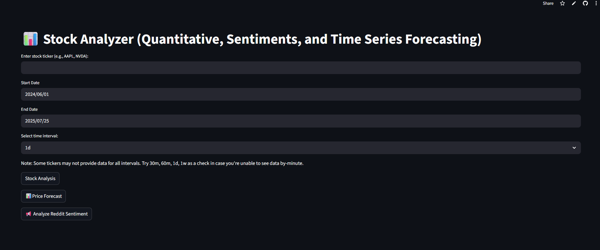
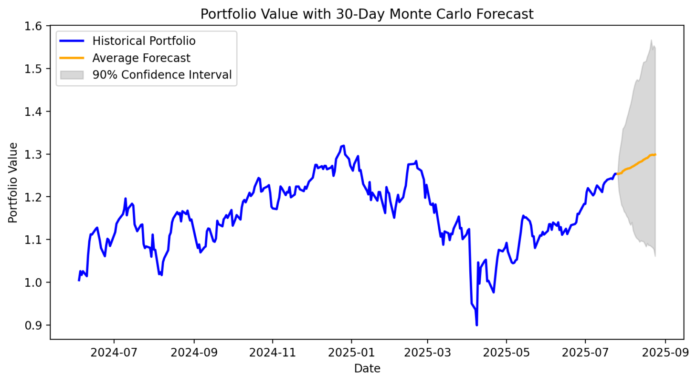

Stock Analyzer
Overview
This app allows users to input any stock of their choice and retrieve key stock details, such as the Price to Earnings ratio, Debt to Equity Ratio, Sentiments and more. Arjun created this app as it was something that he needed in order to make trading easier for his own personal portfolio. Often, you have to go to many sources, webpages, and deal with loading times and time spent finding data, with this app, he was able to get a quick breakdown of a few key metrics that he looks at when deciding whether to open a position in a stock or not.
The model
The landing page for the app is as shown below. This allows the user to enter any ticker they’re interested in as well as alter the date and time intervals between data.

Indicators (VWAP, TWAP, RSI, MACD)
These methods are generally used by institutions to evaluate a stock, and their strategy for that stock. VWAP accounts for volume while TWAP does not.
VWAP (Volume Weighted Average Price) and TWAP (Time Weighted Average Price) are both trading benchmarks used to calculate average prices over a period, but they differ in their weighting methods. VWAP factors in trading volume, giving more weight to prices with higher volume, while TWAP gives equal weight to each time interval regardless of volume.
The Relative Strength Index (RSI) [second plot in the image above] is a popular technical analysis tool used to evaluate the momentum of price movements in financial markets. It’s an oscillator that fluctuates between 0 and 100, helping traders identify potential overbought or oversold conditions. An RSI above 70 typically suggests overbought conditions, while an RSI below 30 indicates oversold conditions.
The MACD (Moving Average Convergence Divergence) is a popular technical indicator used in trading to identify trends and momentum shifts. It is calculated by subtracting the 26-period Exponential Moving Average (EMA) from the 12-period EMA, producing the MACD line. A second line, known as the signal line, is the 9-period EMA of the MACD line and serves to smooth out fluctuations. When the MACD line crosses above the signal line, it suggests bullish momentum (a potential buy signal), while a crossover below indicates bearish momentum (a potential sell signal). The MACD histogram—the difference between the MACD line and the signal line—is plotted as bars and visually represents the strength of the momentum: increasing bar height shows strengthening momentum, and decreasing bars signal weakening momentum. Additionally, when the MACD line is above zero, it typically indicates upward momentum, while values below zero suggest downward momentum. The MACD is widely used because it combines both trend-following and momentum elements, making it useful for spotting potential entry and exit points in trending markets.
1. Trend Confirmation with EMA
Use EMA (e.g., 50-day or 200-day) [Shown in plot together with TWAP and VWAP] to identify the overall trend:
Price > EMA: Uptrend (favor long trades)
Price < EMA: Downtrend (favor short trades)
2. Entry Timing with MACD Signal Line
Within the trend:
MACD line crosses above Signal Line → Bullish signal
MACD line crosses below Signal Line → Bearish signal
3. Momentum Confirmation with RSI
Confirm with RSI:
Buy entry if RSI is rising but not yet overbought (e.g., between 30 and 70)
Sell/short if RSI is falling from overbought (>70) or rising from oversold (<30)
P/E and D/E Ratios
The price-to-earnings (P/E) ratio and debt-to-equity (D/E) ratio are two important financial metrics used to assess a company’s valuation and financial health. The P/E ratio indicates how much investors are willing to pay for each dollar of a company’s earnings, while the D/E ratio measures the extent to which a company is financed by debt versus equity.
A higher P/E ratio suggests investors are willing to pay more for each dollar of earnings, potentially indicating high growth expectations or that the stock is overvalued. A lower P/E ratio may suggest the stock is undervalued or that the company faces risks or weak performance
A higher D/E ratio indicates a company is more reliant on debt financing, which can increase financial risk. A lower D/E ratio suggests a company is more conservatively financed with equity.


Sentiment Analysis
This is currently a work in progress. This feature will scrape data from social media sites (primarily Reddit) to gain insights into the overriding customer sentiment with regards to the stock in question. A FinBERT model is used to generate sentiment scores.
Below is an example of the output shown by the model.
Time Series Model
The time series model is currently under construction. Models such as ARIMA and LSTM are being tested.
Portfolio Simulation: Monte Carlo
Users are able to input their portfolio and holdings to simulate returns for the next 30 days, and also back-test their portfolio performance against a situation which would have them have equal holdings in all listed shares.
The model produces output like below, allowing user to gain a high level overview of portfolio performance and also a forecast of future performance.

Reminder, the app can be found be clicking this link right HERE